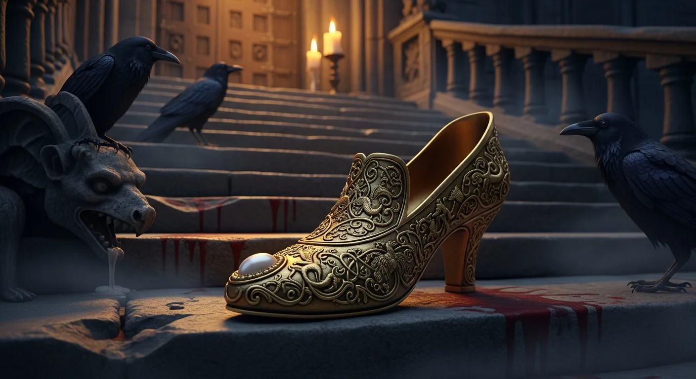
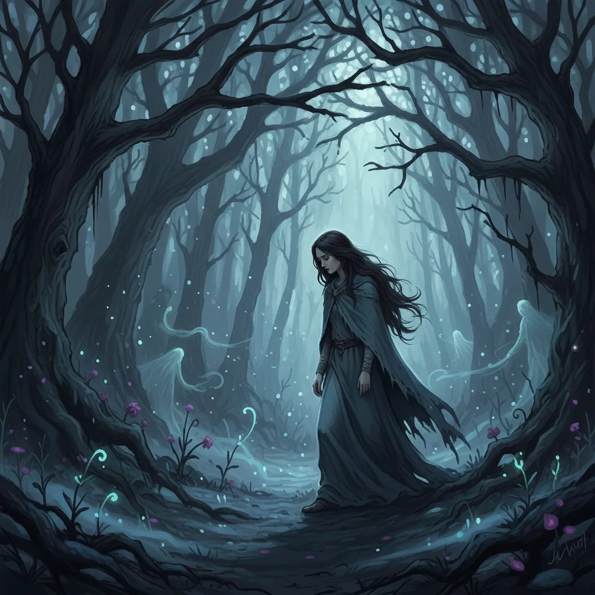

Die Brüder Grimm sammelten im frühen 19. Jahrhundert Volksmärchen aus dem deutschsprachigen Raum. Doch ihre ursprünglichen Fassungen — bevor sie diese für spätere Auflagen abschwächten — enthalten Grausamkeiten, die selbst modernen Horrorautoren die Schamesröte ins Gesicht treiben würden. Kannibalismus, Verstümmelung, Kindsmord und psychologische Folter gehörten zum Standardrepertoire der mündlichen Überlieferung. Willkommen in der Welt der echten Grimm-Märchen.
Hintergrund
Jacob und Wilhelm Grimm veröffentlichten 1812 die erste Ausgabe ihrer Kinder- und Hausmärchen — nicht als Kinderbuch, sondern als akademische Sammlung deutscher Volkserzählungen. Die Geschichten waren roh, brutal und ungeschönt. Doch mit jeder neuen Auflage glätteten die Brüder die Texte: Sexuelle Anspielungen verschwanden, böse Mütter wurden zu Stiefmüttern, und die grausamsten Details wurden abgemildert. Die siebte und letzte Auflage von 1857 ist die Version, die wir heute kennen — und selbst die ist noch erschreckend genug. Die Erstausgabe von 1812 war nie für Kinder gedacht. Sie war ein ethnographisches Dokument, eine Konservierung mündlicher Traditionen, die seit Jahrhunderten am Lagerfeuer erzählt wurden.
#1 — Der Wacholderbaum (KHM 47)
Es gibt Märchen, die sind düster. Und dann gibt es Der Wacholderbaum — ein Märchen, das so verstörend ist, dass es selbst unter Folkloreforschern als eines der extremsten Stücke der Sammlung gilt.
Die Geschichte beginnt harmlos genug: Ein kleiner Junge lebt mit seinem Vater, seiner Stiefmutter und seiner Halbschwester Marlenken. Die Stiefmutter hasst den Jungen. Eines Tages bittet sie ihn, sich einen Apfel aus einer Truhe zu nehmen. Als er sich hineinbeugt, schlägt sie den schweren Deckel mit solcher Wucht zu, dass sein Kopf abgetrennt wird und in die Äpfel rollt.
Doch das ist erst der Anfang. Um ihre Tat zu vertuschen, setzt die Stiefmutter dem toten Jungen den Kopf wieder auf, bindet ein Tuch um seinen Hals und setzt ihn auf einen Stuhl. Als Marlenken ihn anspricht und keine Antwort bekommt, gibt sie ihm eine Ohrfeige — woraufhin der Kopf herunterfällt. Die Stiefmutter gibt Marlenken die Schuld und beginnt dann, den Jungen in Stücke zu hacken. Sie kocht ihn zu einem Eintopf — einem „Sauerfleisch" — und serviert ihn dem ahnungslosen Vater zum Abendessen.
„Das schmeckt mir so gut, gebt mir mehr davon", sagt der Vater und isst seinen eigenen Sohn auf, Knochen für Knochen. Marlenken sammelt weinend die übriggebliebenen Knochen und legt sie unter den Wacholderbaum, wo die leibliche Mutter des Jungen begraben liegt. Aus dem Baum erhebt sich ein wunderschöner Vogel — die Wiedergeburt des Jungen. Der Vogel fliegt durch die Stadt, singt ein Lied über seinen Mord und lässt am Ende einen Mühlstein auf die Stiefmutter fallen, der sie zermalmt.
Dunkelheitsstufe: 5/5 — Enthauptung, unfreiwilliger Kannibalismus, Kindsmord und eine der verstörendsten Kochszenen der Literaturgeschichte.
#2 — Aschenputtel (KHM 21) — Die echte Version
Vergiss die gläsernen Pantoffeln, vergiss die gute Fee, vergiss den romantischen Tanz auf dem Ball. Das echte Aschenputtel der Brüder Grimm ist eine Geschichte über obsessiven Neid, Selbstverstümmelung und blutige Rache.
In der Grimm-Version gibt es keine Fee. Stattdessen pflanzt Aschenputtel ein Reis auf dem Grab ihrer toten Mutter und bewässert es mit ihren Tränen. Daraus wächst ein Haselbaum, in dem ein weißer Vogel lebt, der ihr Wünsche erfüllt. Die Schuhe sind aus Gold, nicht aus Glas — ein Detail, das auf einen Übersetzungsfehler in der französischen Fassung von Charles Perrault zurückgeht (verre statt vair, also Glas statt Eichhörnchenfell).
Doch der wahre Horror beginnt, als der Prinz mit dem goldenen Schuh das Land durchreitet. Die erste Stiefschwester passt nicht hinein. Die Mutter reicht ihr ein Messer und sagt: „Hau die Zehe ab; wenn du Königin bist, so brauchst du nicht mehr zu Fuß zu gehen." Die Tochter gehorcht, zwängt den blutenden Fuß in den Schuh und reitet mit dem Prinzen davon. Doch zwei Tauben auf dem Haselbaum rufen:
„Rucke di guck, rucke di guck, Blut ist im Schuck. Der Schuck ist zu klein, die rechte Braut sitzt noch daheim."
Der Prinz bringt sie zurück. Die zweite Stiefschwester hackt sich die Ferse ab — gleiches Spiel, gleiches Blut, gleiches Lied der Tauben. Erst Aschenputtel passt in den Schuh.
Und die Strafe? Bei Aschenputtels Hochzeit setzen sich die Tauben auf die Schultern der Stiefschwestern und picken ihnen die Augen aus — erst das eine, dann das andere. Sie verbringen den Rest ihres Lebens blind und bettelnd.
Dunkelheitsstufe: 4/5 — Selbstverstümmelung auf Anweisung der eigenen Mutter und erzwungene Erblindung als Hochzeitsgeschenk.

#3 — Blaubart (nach Perrault/Grimm)
Streng genommen stammt Blaubart aus der Feder von Charles Perrault (1697), doch die Brüder Grimm nahmen verwandte Varianten in ihre Sammlung auf — darunter Fitchers Vogel (KHM 46) und Das Mordschloss. Die Grundstruktur ist immer dieselbe, und sie ist zutiefst verstörend.
Ein reicher, geheimnisvoller Adliger mit einem blauen Bart heiratet eine junge Frau. Er gibt ihr die Schlüssel zu allen Räumen seines Schlosses — doch eine einzige Tür darf sie niemals öffnen. Natürlich öffnet sie die Tür. Dahinter findet sie die zerstückelten Leichen seiner früheren Ehefrauen, aufgehängt an Haken, der Boden eine einzige Blutlache.
In ihrer Panik lässt sie den Schlüssel in das Blut fallen. Und hier greift das zentrale Symbol der Geschichte: Das Blut lässt sich nicht mehr abwaschen. Egal wie sehr sie schrubbt — der Schlüssel bleibt rot. Es ist ein Zeichen des Wissens, das nicht ungeschehen gemacht werden kann. Ein Zeichen der Schuld, die sie nun mit ihrem Mann teilt. Blaubart erkennt sofort, dass sie die Kammer betreten hat, und erklärt ihr, dass sie nun als nächste an die Reihe komme.
Folkloreforscher haben die Figur des Blaubart mit realen Serienmördern des Mittelalters in Verbindung gebracht, insbesondere mit Gilles de Rais, einem französischen Adligen und ehemaligen Kampfgefährten von Jeanne d'Arc, der im 15. Jahrhundert wegen des Mordes an über 100 Kindern hingerichtet wurde. Ob die Verbindung historisch haltbar ist, bleibt umstritten — doch die Parallelen sind frappierend.
Dunkelheitsstufe: 5/5 — Serienmord, häusliche Gewalt als System und ein Schlüssel, der zum Richter wird.
#4 — Die Kinder im Hungersnot (KHM 128)
Dieses kurze Märchen ist so erschütternd, dass es selbst in Grimm-Gesamtausgaben oft nur in den Anmerkungen steht. Es hat keine Heldenreise, kein Happy End, keine Moral — nur nackten Horror.
Eine Mutter, die vom Wahnsinn des Hungers getrieben wird, wendet sich an ihre zwei kleinen Kinder und sagt: „Ich muss euch schlachten, damit ich etwas zu essen habe."
Die Kinder flehen: „O Mutter, verschon uns, wir wollen hinausgehen und uns selbst etwas Brot suchen." Sie gehen hinaus, finden nichts, und kommen zurück. Die Mutter ist in ihrem Wahn gefangen und wiederholt ihre Ankündigung. Die Kinder flehen erneut. In einer Version der Geschichte greift Gott ein und schickt Essen. In einer anderen — der dunkleren — fehlt dieses Wunder.
Die Geschichte ist ein Spiegel realer historischer Zustände. Hungersnöte waren im mittelalterlichen und frühneuzeitlichen Europa keine Seltenheit, und die Chroniken berichten tatsächlich von Fällen, in denen verzweifelte Eltern ihre Kinder töteten oder gar aßen. Das Märchen verarbeitet ein kollektives Trauma, das für Generationen von Zuhörern bittere Realität war.
Dunkelheitsstufe: 5/5 — Keine Monster, keine Hexen. Nur eine hungernde Mutter und ihre Kinder. Der Horror liegt in der Alltäglichkeit.
#5 — Frau Trude (KHM 43)
Die meisten Märchen folgen einer Struktur: Held zieht aus, überwindet Prüfungen, kehrt verwandelt zurück. Frau Trude tut nichts dergleichen. Es ist ein Märchen ohne Erlösung, ohne Rettung, ohne Hoffnung — und es ist erschreckend kurz.
Ein eigensinniges Mädchen will unbedingt die geheimnisvolle Frau Trude besuchen, obwohl ihre Eltern sie eindringlich davor warnen. „Frau Trude ist eine böse Frau, die gottlose Dinge treibt", sagen sie. Das Mädchen geht trotzdem.
Auf dem Weg zum Haus sieht sie nacheinander drei Gestalten: einen schwarzen Mann auf der Treppe, einen grünen Mann und einen blutroten Mann. Im Haus angekommen, erzählt sie Frau Trude von diesen Erscheinungen. Frau Trude erklärt sie nüchtern: der Köhler, der Jäger und der Metzger. Dann fragt das Mädchen, warum sie durch das Fenster eine Gestalt mit einem Feuerkopf gesehen habe.
Frau Trude antwortet: „Da hast du die Hexe in ihrem rechten Schmuck gesehen." Und dann, ohne Vorwarnung, ohne dramatische Szene: „Ich habe schon lange auf dich gewartet. Du sollst mir leuchten."
Sie verwandelt das Mädchen in einen Holzklotz und wirft ihn ins Feuer. „Das brennt einmal hell!", sagt sie, und wärmt sich daran.
Ende. Keine Rettung. Kein Held, der kommt. Kein Prinz. Das Mädchen ist tot, verbrannt als Brennholz, und Frau Trude wärmt sich an ihren Überresten. Die Botschaft ist so kalt wie das Märchen kurz ist: Manche Warnungen sollte man ernst nehmen. Es gibt Orte, von denen man nicht zurückkehrt.
Dunkelheitsstufe: 4/5 — Kompromisslose Endgültigkeit. Kein Ausweg, kein Lerneffekt für das Opfer. Nur Asche.
#6 — Das Mädchen ohne Hände (KHM 31)
Die Geschichte vom Mädchen ohne Hände ist vielleicht das psychologisch grausamste Märchen der Sammlung. Es beginnt mit einem Pakt, der so monströs ist, dass man ihn kaum glauben kann — und doch ist er das zentrale Motiv.
Ein Müller, arm und verzweifelt, trifft im Wald auf den Teufel. Dieser bietet ihm unermesslichen Reichtum an — im Tausch gegen das, was hinter seiner Mühle steht. Der Müller denkt an seinen alten Apfelbaum und willigt ein. Doch hinter der Mühle steht seine Tochter und fegt den Hof.
Als der Teufel kommt, um das Mädchen zu holen, hat sie sich so rein gewaschen und einen Kreis um sich gezogen, dass er sie nicht berühren kann. Er befiehlt dem Vater: „Nimm ihr alles Wasser weg, damit sie sich nicht mehr waschen kann." Das Mädchen weint auf ihre Hände, und ihre Tränen halten sie rein. Der Teufel, außer sich vor Wut, gibt seinen letzten Befehl:
„Hau ihr die Hände ab, sonst kann ich ihr nicht beikommen."
Und der Vater — ihr eigener Vater — gehorcht. Er hackt seiner Tochter beide Hände ab. Das Mädchen weint erneut auf die Stümpfe, und ihre Tränen halten sie so rein, dass der Teufel endgültig aufgibt und verschwindet.
Verstümmelt und verstoßen wandert das Mädchen durch die Welt. Sie findet schließlich einen König, der sie heiratet und ihr silberne Hände anfertigen lässt. Doch durch die Intrigen des Teufels wird sie erneut vertrieben — diesmal mit ihrem Neugeborenen. Sie lebt jahrelang im Wald, und durch göttliche Gnade wachsen ihre Hände schließlich nach.
Das Happy End ist ein schwacher Trost. Die eigentliche Geschichte handelt von einem Vater, der seine Tochter buchstäblich verkauft und dann verstümmelt — ein Bild, das reale Machtverhältnisse und die Ohnmacht von Frauen im patriarchalen System mit erschreckender Klarheit abbildet.
Dunkelheitsstufe: 5/5 — Ein Vater verstümmelt seine Tochter auf Befehl des Teufels. Die Metaphorik ist so dünn wie eine Rasierklinge.

#7 — Der Räuberbräutigam (KHM 40)
Der Räuberbräutigam liest sich wie das Drehbuch eines Slasher-Films — nur dass er 200 Jahre vor dem Genre geschrieben wurde. Es ist eines der wenigen Grimm-Märchen, in dem eine Frau die Hauptrolle spielt und durch ihren eigenen Verstand überlebt.
Ein Müller verlobt seine Tochter mit einem Mann, der reich zu sein scheint. Das Mädchen hat ein ungutes Gefühl. Als sie seinen Wohnsitz besucht, findet sie ein verlassenes Haus tief im Wald. Im Keller entdeckt sie eine alte Frau, die sie warnt: „Du bist in ein Mörderhaus geraten. Dein Bräutigam will dich töten, zerhacken und aufessen."
Das Mädchen versteckt sich hinter einem Fass. Kurz darauf kehrt die Räuberbande mit einem weiteren Opfer zurück — einer jungen Frau. Was folgt, gehört zu den explizitesten Gewaltdarstellungen in der gesamten Grimm-Sammlung:
Die Räuber zerren das Mädchen herein, reißen ihr die Kleider vom Leib, legen sie auf einen Tisch, zerhacken ihren Körper in Stücke und bestreuen das Fleisch mit Salz. Ein Räuber bemerkt einen goldenen Ring am Finger des Opfers. Er hackt den Finger ab — und der abgetrennte Finger fliegt durch die Luft und landet im Schoß der versteckten Braut.
Das Mädchen überlebt, flieht und erzählt bei der Hochzeit die Geschichte als „Traum", bis sie am Ende den abgetrennten Finger als Beweis vorzeigt. Die Räuber werden hingerichtet.
Dunkelheitsstufe: 5/5 — Serienmord, Kannibalismus, Zerstückelung bei lebendigem Leib und ein abgetrennter Finger als Beweisstück.
#8 — Schneewittchen (KHM 53) — Die echte Version
Schneewittchen kennt jeder. Aber die wenigsten kennen die Originalversion von 1812 — und diese unterscheidet sich in zwei entscheidenden Punkten von jeder Disney-Adaption.
Erstens: Es ist die leibliche Mutter. In der Erstausgabe von 1812 ist es nicht die Stiefmutter, die eifersüchtig auf Schneewittchens Schönheit ist — es ist ihre eigene Mutter. Erst in späteren Auflagen änderten die Brüder Grimm diese Figur zur Stiefmutter, weil eine biologische Mutter, die ihr eigenes Kind töten will, selbst für damalige Verhältnisse zu verstörend war.
Zweitens: Der Kannibalismus. Als die Königin den Jäger beauftragt, Schneewittchen im Wald zu töten, verlangt sie nicht nur ein Herz als Beweis. Sie verlangt Lunge und Leber — und zwar nicht als Trophäe. Sie lässt sie vom Koch in Salzwasser kochen und isst sie auf. In dem Glauben, die Organe ihrer Tochter zu verzehren, verspeist sie in Wirklichkeit die eines jungen Wildschweins.
Und dann das Ende. In der Grimm-Version gibt es keinen romantischen Abschiedskuss. Der gläserne Sarg mit dem scheintoten Schneewittchen wird von Dienern getragen. Einer stolpert, der Sarg fällt, und das vergiftete Apfelstück wird aus Schneewittchens Hals geschleudert — sie erwacht.
Die Strafe für die Königin? Bei Schneewittchens Hochzeit werden eiserne Schuhe ins Feuer gestellt, bis sie glühend rot sind. Die Königin wird gezwungen, die Schuhe anzuziehen und so lange zu tanzen, bis sie tot umfällt. Der ganze Hochzeitssaal sieht zu.
Dunkelheitsstufe: 4/5 — Kannibalismus (wenn auch unbeabsichtigt), Mordauftrag einer Mutter an ihrer Tochter und Tod durch glühende Tanzschuhe.
#9 — Die zwölf Brüder (KHM 9)
Die zwölf Brüder beginnt mit einer Szene, die in ihrer beiläufigen Grausamkeit schwer zu überbieten ist. Ein König hat zwölf Söhne. Seine Frau ist erneut schwanger. Er trifft eine Entscheidung:
„Wird das dreizehnte Kind ein Mädchen, so müssen die zwölf Buben sterben, damit ihr Reichtum groß wird und das Königreich ihr allein zufällt."
Er lässt zwölf Särge zimmern. Kleine Särge, für Kinder. Jeder wird mit Hobelspänen ausgelegt und einem Totenkissen versehen. Die Särge werden in ein verschlossenes Zimmer gestellt. Der König gibt der Königin den Schlüssel und verbietet ihr, mit jemandem darüber zu sprechen.
Die Königin, von Trauer zerfressen, sitzt jeden Tag weinend in ihrem Zimmer. Der jüngste Sohn, Benjamin, fragt sie nach dem Grund. Sie zeigt ihm die Särge. Die zwölf Brüder fliehen in den Wald und schwören Rache an jedem Mädchen, das ihnen begegnet.
Jahre später findet die inzwischen herangewachsene Schwester ihre Brüder im Wald. Sie leben zusammen, doch als die Schwester zwölf Lilien pflückt, werden die Brüder in Raben verwandelt. Um sie zurückzuverwandeln, muss sie sieben Jahre lang schweigen — kein Wort, kein Lachen. In dieser Zeit wird sie von einem König gefunden und geheiratet, doch seine Mutter intrigiert gegen sie und verurteilt sie als Hexe zum Feuertod. Erst auf dem Scheiterhaufen, als die sieben Jahre vorbei sind, bricht sie ihr Schweigen und die Raben werden zurückverwandelt.
Dunkelheitsstufe: 4/5 — Ein Vater, der zwölf Kindersärge bauen lässt, Brüder, die jedes Mädchen töten wollen, und eine Schwester, die beinahe bei lebendigem Leib verbrennt.
#10 — Fitchers Vogel (KHM 46)
Fitchers Vogel ist die Grimm-eigene Variante der Blaubart-Sage — und in vielerlei Hinsicht noch verstörender als das französische Original. Hier ist der Antagonist kein Adliger, sondern ein Hexenmeister, der sich als Bettler verkleidet und Frauen durch Berührung entführt.
Der Hexenmeister kidnappt drei Schwestern, eine nach der anderen. Jeder gibt er ein Ei zum Aufbewahren und einen Schlüssel zu einer verbotenen Kammer. Die ersten beiden Schwestern öffnen die Tür und finden ein Becken voller Blut, in dem zerhackte menschliche Körper liegen — die Überreste früherer Opfer. Vor Schreck lassen sie das Ei ins Blut fallen. Der Blutfleck auf dem Ei verrät sie dem Hexenmeister, der sie zur Strafe ebenfalls zerhackt und in das Becken wirft.
Die dritte Schwester ist klüger. Sie legt das Ei beiseite, bevor sie die Kammer betritt. Im Blutbecken findet sie die Körperteile ihrer Schwestern. Und hier wird das Märchen auf bizarre Weise hoffnungsvoll: Sie setzt die Körperteile ihrer Schwestern wieder zusammen — Kopf an Rumpf, Arme an Schultern, Beine an Hüften — und die Schwestern erwachen wieder zum Leben.
Die dritte Schwester täuscht den Hexenmeister, versteckt ihre wiederbelebten Schwestern in einem Korb, verkleidet sich selbst als Vogel (daher der Titel) und flieht. Am Ende wird das Haus des Hexenmeisters von den Brüdern und Verwandten der Schwestern angezündet — mit dem Hexenmeister und seiner gesamten Bande darin.
Dunkelheitsstufe: 5/5 — Serienmord durch Zerstückelung, ein Blutbecken als Vorratskammer und die makaberste Wiederbelebung der Literaturgeschichte.
Was die Grimms uns eigentlich erzählen wollten
Wer diese zehn Geschichten gelesen hat, stellt sich unweigerlich die Frage: Warum? Warum waren diese Erzählungen so grausam? Warum hat man sie Kindern erzählt? Und was sagt das über die Gesellschaft aus, die sie hervorgebracht hat?
Die Antwort ist vielschichtiger, als man denkt.
Erstens: Die Märchen waren Überlebenswissen. In einer Welt ohne Polizei, ohne soziale Sicherungssysteme und ohne Kinderschutzgesetze waren Geschichten das wichtigste Werkzeug, um Kindern Gefahren begreiflich zu machen. „Geh nicht allein in den Wald" klingt abstrakt. „Ein Mädchen ging allein in den Wald und wurde von einer Hexe zu Brennholz gemacht" — das bleibt haften. Die Brutalität war kein Stilmittel, sondern eine pädagogische Notwendigkeit.
Zweitens: Die Märchen verarbeiteten kollektive Traumata. Hungersnöte, Pestepidemien, Kindersterblichkeit, häusliche Gewalt — das alles war für die Zuhörer des 17. und 18. Jahrhunderts keine Fiktion, sondern Alltagserfahrung. Die Geschichte der Mutter, die ihre Kinder schlachten will (KHM 128), wurde in Regionen erzählt, in denen Hungersnöte tatsächlich zu kannibalischen Akten geführt hatten. Die Märchen boten einen Rahmen, um das Unsagbare auszusprechen.
Drittens: Die Märchen spiegelten reale Machtstrukturen wider. Die böse Stiefmutter ist nicht nur ein narratives Klischee — sie war eine demographische Realität. Die Müttersterblichkeit war hoch, Väter heirateten schnell wieder, und die Kinder aus erster Ehe standen oft in direkter Konkurrenz zu den Kindern der neuen Frau um Erbe und Ressourcen. Die Märchen codierten diese Konflikte in Bilder, die jeder verstand.
Viertens: Die Grausamkeit war die Pointe. In einer mündlichen Erzähltradition überleben nur die Geschichten, die hängenbleiben. Und nichts bleibt so hängen wie Schrecken. Die Märchen waren nicht trotz ihrer Brutalität erfolgreich — sie waren es deswegen. Jede abgehackte Zehe, jeder aufgegessene Sohn, jedes Mädchen im Feuer war ein Haken, der sich ins Gedächtnis bohrte und die Geschichte über Generationen hinweg am Leben hielt.
Die Brüder Grimm wussten das. Sie wussten auch, dass ihre Sammlung an ein akademisches Publikum gerichtet war — an Folkloristen, Linguisten, Kulturhistoriker. Die „Kinder-" in Kinder- und Hausmärchen bezog sich auf die Geschichten, die in Familien erzählt wurden — nicht auf die Zielgruppe der Leser. Erst als das Buch unerwartet populär wurde, begannen sie mit der Entschärfung.
Was Disney uns gegeben hat, sind Märchen ohne Zähne. Hübsche Prinzessinnen, singende Tiere, garantierte Happy Ends. Was die Grimms uns hinterlassen haben, ist etwas völlig anderes: ein Archiv des menschlichen Schreckens, ehrlich, ungeschönt und erschreckend zeitlos. Die Dunkelheit in diesen Geschichten ist kein Makel — sie ist der Kern.
Quellen
- Grimm, Jacob & Wilhelm: Kinder- und Hausmärchen (1812, Erstausgabe)
- Tatar, Maria: The Hard Facts of the Grimms' Fairy Tales (2003)
- Zipes, Jack: The Brothers Grimm: From Enchanted Forests to the Modern World (2002)
- Warner, Marina: From the Beast to the Blonde (1994)